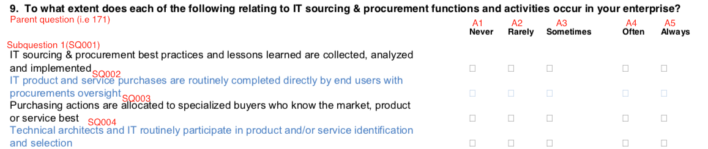

Home
Notes
Subquestions
These are displayed in the following format: The annotations represent ids and responses in relation to the responses from the functions.
The annotations represent ids and responses in relation to the responses from the functions.